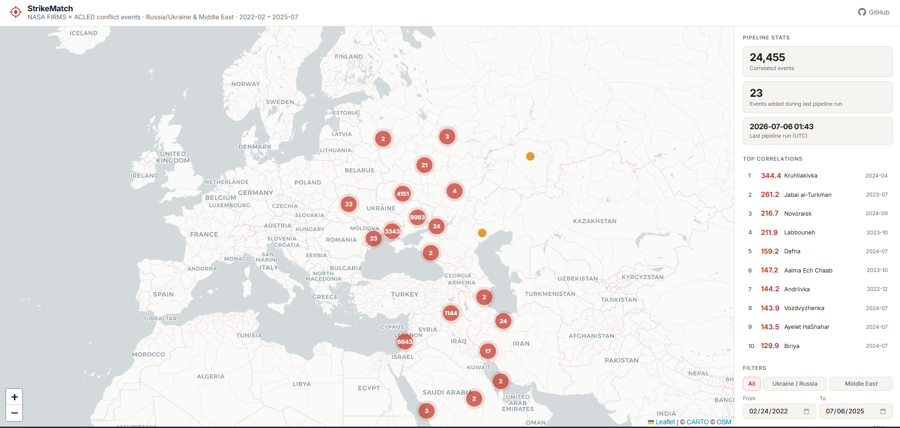
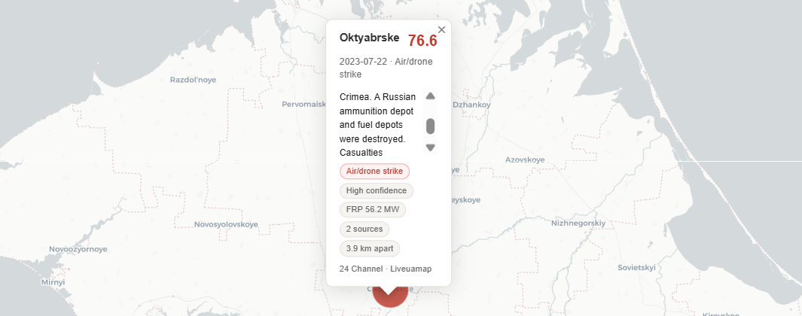
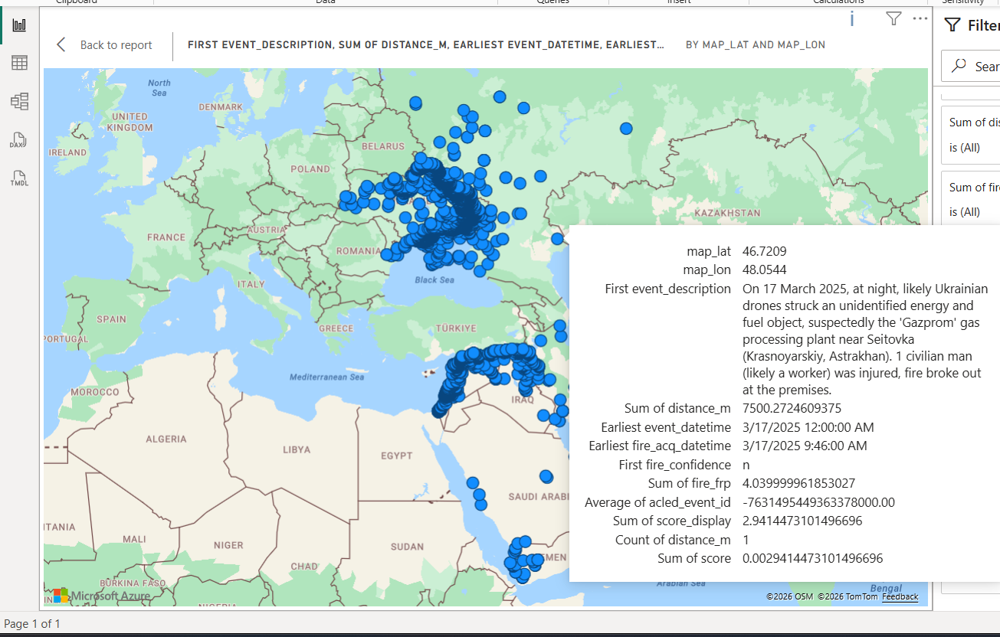

Background
After repeatedly encountering Apache Spark, Apache Airflow, and Databricks in internship interviews, I wanted to gain hands-on experience with the modern data engineering stack by building something beyond a tutorial project. Around the same time, I became interested in how public satellite data is used to monitor real-world events, and recent geopolitical conflicts in Ukraine and the Middle East provided a compelling real-world case study. This project also gave me the opportunity to incorporate Claude Code into my workflow, using it to accelerate development while ensuring I developed a solid understanding of each technology along the way.
Objective
Build an automated pipeline that ingests NASA FIRMS satellite fire detections and ACLED conflict event records, correlates them spatially and temporally, and surfaces confirmed matches on an interactive map. Use a custom 5-factor scoring algorithm that weighs fire radiative power, detection confidence, source credibility, distance, and timing to rank each fire-event pair. Gain exposure to the Databricks ecosystem and modern data engineering practices.
Outcome
A live, deployed pipeline running daily via GitHub Actions, processing data through a bronze-silver-gold Delta Lake architecture on Databricks using PySpark. Results are exported automatically and served on an interactive Leaflet dashboard hosted via GitHub Pages. During development, the project went through several iterations using Apache Airflow for orchestration, Power BI for serving the gold layer, and Streamlit + pydeck for early dashboard prototyping.
Screenshots — click to enlarge


